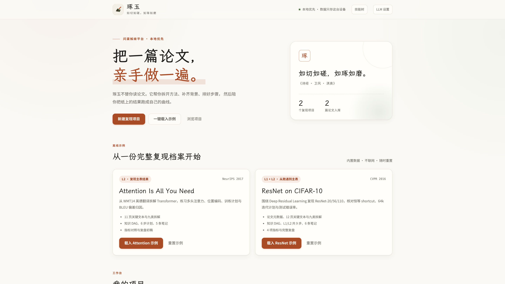
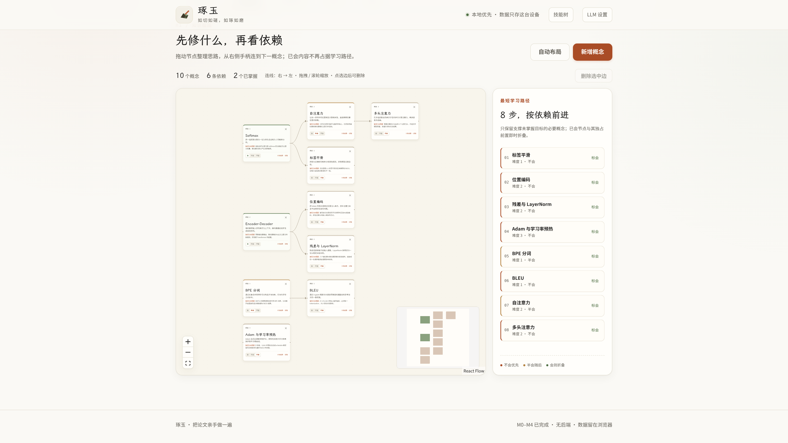

作品 · 论文复现
琢玉
问渠回答「前人做过吗」，琢玉回答「我怎么亲手做一遍」。它是问渠的姊妹篇：查清现状之后，把那篇最值得学的论文，真正做出来。

它解决什么问题
读论文和复现论文之间隔着一条沟：论文写的是结论，复现要的是步骤。琢玉把一篇论文拆成可动手的结构——每个关键部件一张卡片，写清它在做什么、依据原文哪一段、公式与关键数字是什么——然后排成一条七步主线，陪你从「看懂」走到「做出来」，再把自己的结果与论文指标逐项对照。
七步主线
- 拆解：论文被拆成卡片墙，点开任意卡片看详细解释、原文依据、公式与关键数字、关联卡片。
- 知识地图：部件之间的依赖关系成图，先学什么、后学什么一目了然。
- 复现计划：按依赖顺序生成可执行的复现步骤清单。
- 记事本：边做边记，想法、坑和结论都留在项目里。
- 指标对照：自己的实验结果与论文报告逐项并排，差距在哪里清清楚楚。
- 导出：整个复现过程可导出留档或分享。
- 技能树：做完一篇，掌握的技能被点亮，下一篇学什么有了方向。

本地优先
琢玉没有后端，也不需要账号：全部数据只存在浏览器本地（IndexedDB），关掉网络照样用，论文和笔记不离开你的设备。技术上是 React + Vite + TypeScript 的单页应用。
开发过程
琢玉在 TRAE 中开发完成，全过程留有完整的里程碑记录、关键步骤截图与任务编号，统一放在展示仓库里：robotdoglee/zhuoyu-showcase，演示视频也在其中。